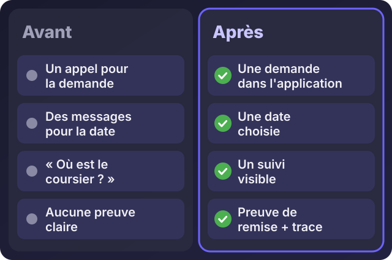
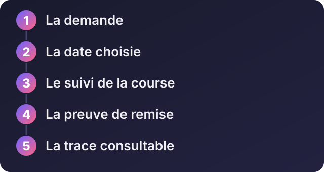

Accueil / Blog / Cas pratiques
Cas pratiquesCas pratique : suivre un retrait de chèque de bout en bout

Écouter cet article · environ 3 min
Ce cas est tiré d'un projet réel, réalisé chez IvoirRapid, une société de livraison à Abidjan. Je le raconte pour montrer une méthode, pas pour afficher des chiffres : ceux-ci appartiennent à l'entreprise.
Le problème
Un client veut qu'on récupère un chèque auprès de lui. Dans la pratique, cela donnait beaucoup d'échanges dispersés : un appel pour la demande, des messages pour fixer le moment, un autre appel pour savoir où en est le coursier, et à la fin, aucune preuve claire que le chèque a bien été remis.
Les conséquences sont connues de toutes les entreprises qui livrent : des allers-retours, des oublis, et des désaccords sur « qui a remis quoi, et quand ».

Ce que l'entreprise attendait
- Que le client puisse demander un retrait lui-même, sans appeler.
- Que le contact sur place et la date choisie soient enregistrés.
- Que chaque étape soit suivie : la demande, la course, la remise.
- Qu'à la fin, il existe une preuve de remise.
Les choix faits
Une application web installable (PWA) plutôt qu'une application à télécharger
Le client n'a rien à chercher dans un magasin d'applications : il ouvre une adresse, et peut l'ajouter à son écran d'accueil. C'est plus léger à déployer, plus simple à mettre à jour, et cela marche sur les téléphones que les gens ont déjà.
Le téléphone d'abord
Le client comme le coursier sont en déplacement. L'écran est conçu pour un pouce : peu de champs, de gros boutons, un seul parcours.
Un parcours en cinq étapes
- La demande : le client indique ce qu'il faut récupérer, avec son contact sur place.
- La date : il choisit le moment qui lui convient.
- Le suivi : il voit où en est la course.
- La remise : le coursier ajoute une preuve de remise, en photo ou en document PDF.
- La trace : tout reste consultable, avec la date de chaque étape.

WhatsApp pour rester dans les habitudes
Les clients utilisent déjà WhatsApp au quotidien. L'application s'appuie donc dessus pour le contact, au lieu de leur imposer un nouvel outil de messagerie.
Ce que cela change
Moins d'échanges manuels, une meilleure traçabilité, et surtout une réponse claire à la question qui provoque le plus de conflits : *qu'est-ce qui s'est passé, et quand ?* Chacun voit la même chose, au même moment.
Ce qu'on en retient
- Partir du moment qui fait mal, ici le doute sur la remise, pas de la liste de fonctions qu'on pourrait ajouter.
- Une preuve vaut mieux qu'une promesse. Une photo ou un document attaché à l'étape règle plus de désaccords que mille explications.
- Un outil que personne n'a besoin d'installer sera utilisé. La simplicité d'accès compte plus que le nombre de fonctions.
- Commencer par le parcours principal, le faire fonctionner chez de vrais utilisateurs, puis seulement l'enrichir.
Et chez vous ?
Beaucoup d'activités ont leur « chèque » : une livraison, une intervention, un document à faire signer, une réparation à suivre. Si vous perdez du temps à vérifier où en est quelque chose, ou à prouver que c'est fait, c'est un bon candidat. Décrivez-moi votre cas : je vous dirai si une application de ce type a du sens, ou si un simple tableau suffit.